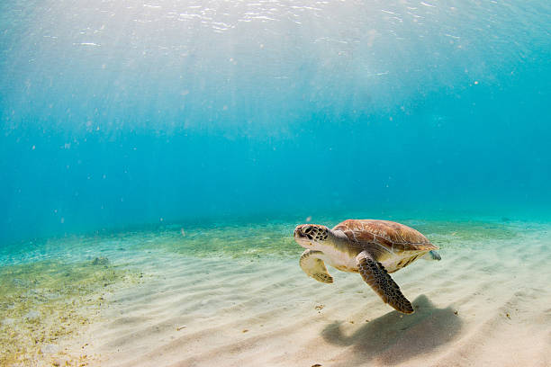
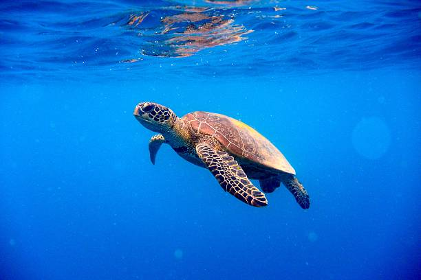

Hikkaduwa Turtle Hatchery
Hikkaduwa turtle hatchery is one of the main turtle hatcheries in Sri Lanka.Hikkaduwa turtle hatchery was built because to increase the turtle habitat in Sri lanka.Many tourists and locals are also come to see Hikkaduwa turtle hatchery.It is now becoming one of the main tourist attractions in Sri Lanka. In Hikkaduwa turtle hatchsery they use many methods and techniques to increase the turtle habitat in Sri Lanka.They are mostly responsible for increasing the turtle habitat in Sri Lanka.Here are some of the methods that they are used to increase the turtle habitat in Sri Lanka:
- Artificial nesting grounds development.
- Artificial nesting grounds management.
- Collecting turtle eggs and protecting them.
- Protecting baby turtles.


